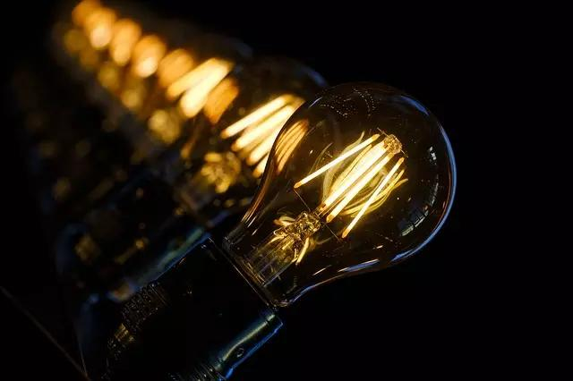
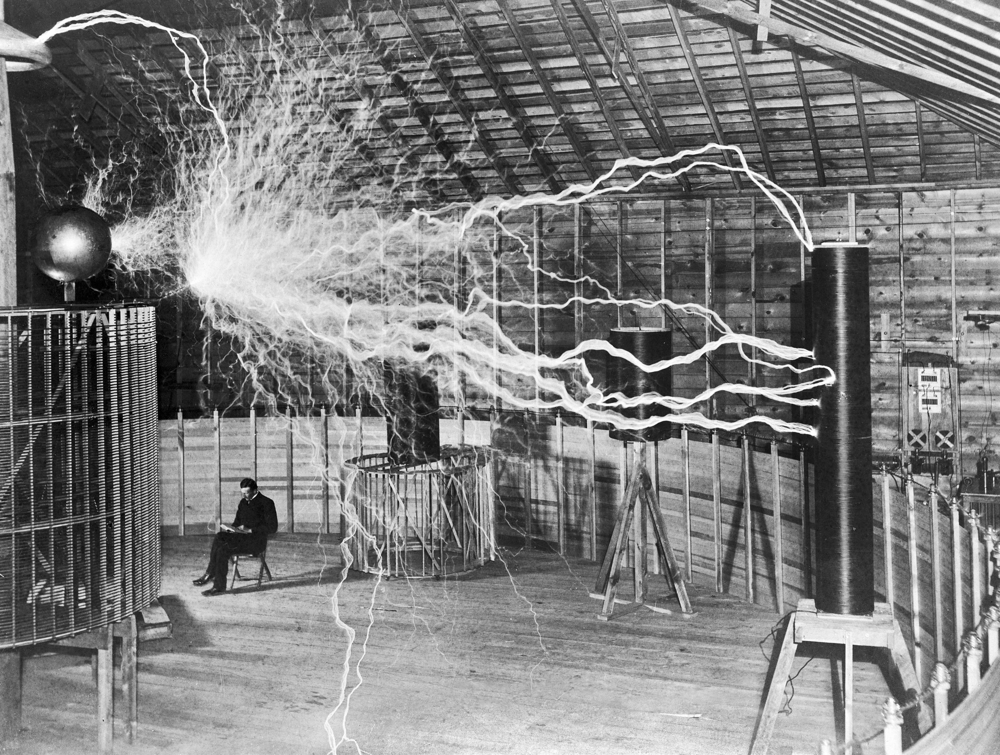

Algumas de suas Invenções
Lâmpada fluorescente

Bobina de Tesla

Motor de indução

Nikola Tesla foi um inventor, engenheiro eletrotécnico e engenheiro mecânico sérvio, mais conhecido por suas contribuições ao projeto do moderno sistema de fornecimento de eletricidade em corrente alternada.
"Tesla foi inegavelmente um dos maiores cientistas de todos os tempos, mas seu reconhecimento foi tardio. Atualmente, ele é conhecido por suas invenções e descobertas, fundamentais para a evolução das telecomunicações, transmissão de energia elétrica etc. No entanto, em sua época, foi tido como um gênio excêntrico que tinha alguns problemas de saúde, como desmaios constantes, e até mesmo alguns prováveis problemas psicológicos."
"Nikola Tesla nasceu no dia 10 de julho de 1856, na cidade de Smiljan, localizada no Império Austríaco. Atualmente essa cidade fica na Croácia, país que surgiu, em 1991, com o desmembramento da Iugoslávia. Apesar de ter nascido em território croata, Tesla pertencia a uma família étnica de sérvios."
"Seu pai, Milutin Tesla, era um padre ortodoxo (religião muito comum entre os sérvios, enquanto os croatas eram católicos, em geral). Sua mãe, Duka Mandic, também era filha de um padre ortodoxo. Tesla afirmava que da sua mãe ele havia herdado uma de suas principais habilidades: a memória fotográfica."
"Tesla também teve quatro irmãos, três irmãs, Angelina, Milka e Marica, e um irmão, chamado Dane. Os anos iniciais da educação de Tesla ocorreram em escolas de Smiljan e Gospic, e o ensino secundário (correspondente ao Ensino Médio) ele fez em Karlovac. Os estudos em Karlovac se iniciaram em 1870 e se estenderam até 1873. Nessa altura, o Império Austríaco já tinha se transformado no Império Austro-húngaro."
Se você quiser descobrir os segredos do Universo, pense em termos de energia, frequência e vibração.
Não creio que haja uma emoção mais intensa para um inventor do que ver suas criações funcionando. Essas emoções fazem você esquecer de comer, de dormir, de tudo.
A compreensão mútua seria enormemente facilitada pelo uso de uma língua universal (o esperanto).